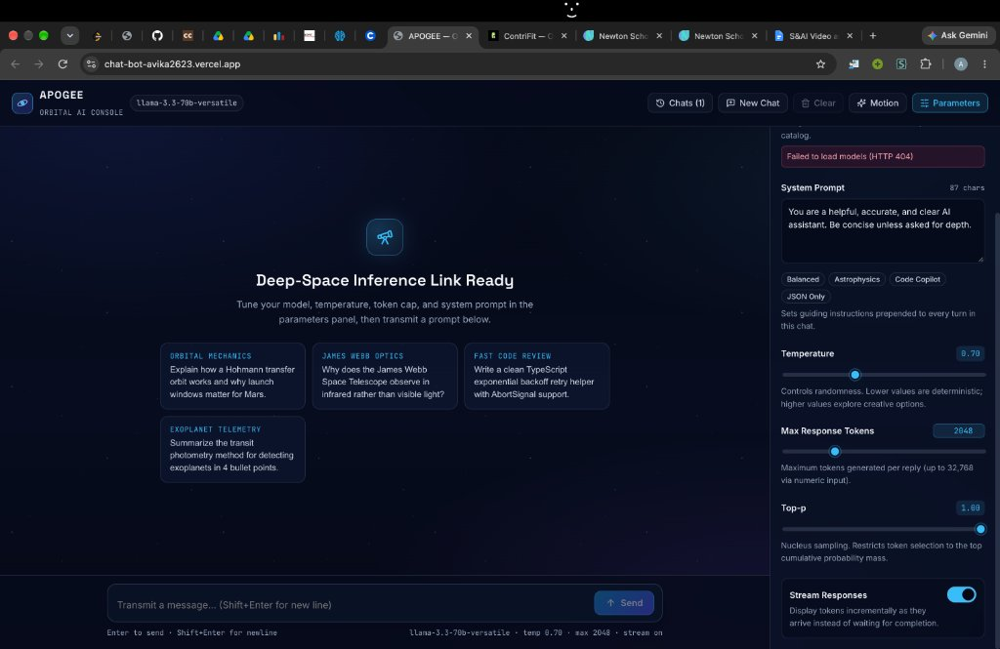

Interactive Deep-Space LLM Parameter Playground & Streaming Inference Console
The APOGEE Orbital AI Console was engineered to demystify generative AI inference for beginner developers and students. While commercial chat tools hide internal parameters behind a simple prompt box, APOGEE surfaces the critical levers of language model behavior:

The application is structured into a secure, decoupled two-tier architecture:
| Layer | Technologies | Security & Operational Role |
|---|---|---|
| Frontend Client | React 19, TypeScript, Vite, Tailwind CSS | Renders the deep-space console, manages active sessions, updates parameter sliders, and parses streaming tokens in real time. |
| Backend API Proxy | Express 5, Node.js (server/groq.ts) |
Protects the GROQ_API_KEY environment variable. All requests from the client pass through this proxy; client bundles contain zero credentials. |
| Inference Engine | Groq Cloud Hardware Accelerators | Executes ultra-low latency inference using llama-3.3-70b-versatile weights with streaming Server-Sent Events. |
| Content Sanitization | DOMPurify & Marked | Sanitizes all generated markdown and code snippets before DOM injection to eliminate XSS risks. |
| Control | Available Range | Default | Behavioral Impact |
|---|---|---|---|
| System Prompt | Custom Textarea + Presets | Helpful, accurate, concise | Sets the foundational rules, tone, and formatting constraints for every turn in the conversation. |
| Temperature | 0.00 to 1.00 |
0.70 |
Controls output randomness. Values near 0.0 are deterministic and analytical; higher values encourage creative divergence. |
| Max Response Tokens | 1 to 32,768 |
2048 |
Defines the maximum token budget for the response, illustrating response truncation mechanics. |
| Top-p (Nucleus) | 0.00 to 1.00 |
1.00 |
Restricts candidate tokens to the cumulative probability mass, preventing low-probability vocabulary choices. |
| Stream Responses | Boolean Toggle (On/Off) | ON |
Streams tokens progressively via Server-Sent Events, demonstrating token-by-token generation in real time. |
• Full-Stack Architecture: Engineered the React 19 client and Express 5 backend proxy with secure environment variable isolation.
• Parameter Drawer & Telemetry UI: Designed and programmed the real-time slider controls, status bar, and astronomy-inspired visual theme.
• Streaming Integration: Configured Server-Sent Events (SSE) handling to render Groq response tokens smoothly without UI blocking.
• Documentation & Verification: Wrote comprehensive system documentation and test suites to characterize parameter behavior.
In accordance with the S&AI Project Portfolio Rubric: